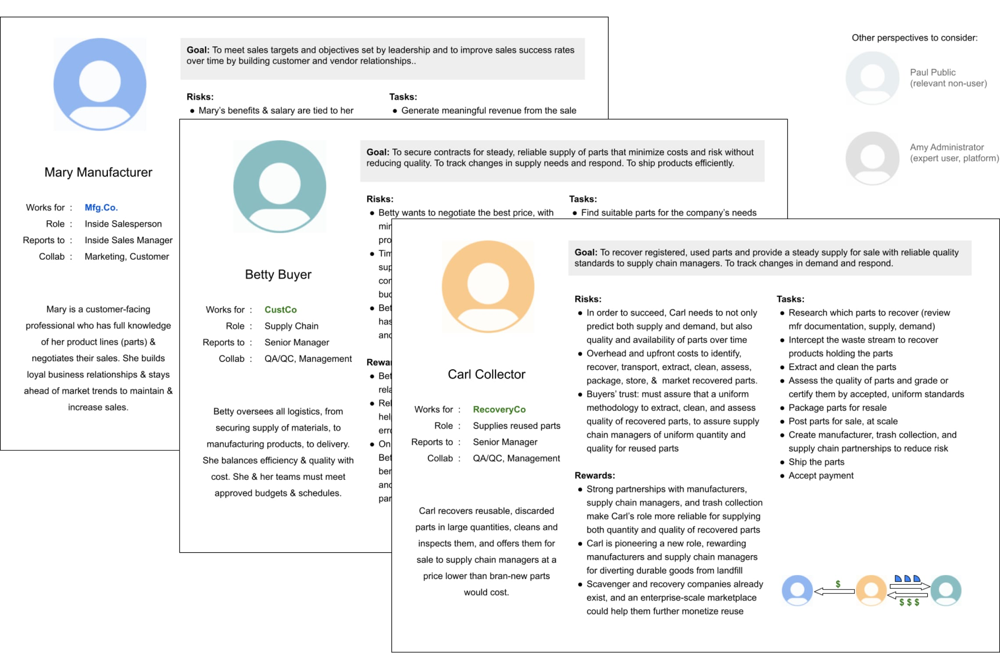

Iterant
Circular economy marketplace for enterprise-scale impact

Incentivizing longer life-cycles for the manufacture and reuse of durable parts
Iterant is a three-sided online marketplace platform (PaaS) powering the circular economy by furnishing its users with incentives that:
- drive a multiple-lifecycle approach to the manufacturing of parts;
- increase the reliability of supply chains for quality reused parts in predictable quantities; and
- motivate the recovery of discarded parts for resale.
I helped the team visualize what the circular marketplace would look like with its unique incentive-based features. The wireframes and prototypes I provided facilitated strategy discussions, helped successfully raise a first seed round of funding, and secured entry to Berkeley SkyDeck, a startup incubator.
My Contributions
Iteratively refined the business model through multi-stakeholder diagrams
Working with the founder, I helped to visualize the convergence of manufacturing, supply chain, and recovery channels to build an ecosystem of reuse.
Being involved at such an early stage, I served as a sounding board for the founder’s evolving business concept and reflected back to help hone the value proposition.
Uncovered users’ goals with proto-personas
Each of the three channels of commerce (manufacturing, supply chain, and recovery) involved a unique end-user with unique concerns and motivations.
Through online research and 1:1 interviews, I familiarized myself with two roles that exist in today’s manufacturing ecosystem: Inside Sales and Supply Chain Management. The third more novel role of “Collector” required some imagination: What are current mainstream roles that are similar? How might these adjacent roles adapt for the circular economy, and what incentives can motivate change given their respective goals?
Guided discussion from theoretical to concrete
From boxes and arrows, to wireframes, to low-fi prototypes, I created artifacts to facilitate discussion and collaboratively refine the evolving concept to:
- Question assumptions that could affect foundational design decisions
- Supplement pitch deck materials with visuals illustrating the business model to aid with funding, recruiting, and discussions on proof-of-concept
- Prioritize must-have features for an MVP
Takeaways
The early-stage start-up experience
- Light touches were key -- even when thinking through a complex product, there were many moving parts in the works, and the team was still figuring it out.
- When imagining an end-user who didn’t yet exist, it was helpful to focus on goals, and to talk to proxy end-users with similar goals.
- At the early stage, my role as a designer was important for facilitating conversation, not just finalizing deliverables.
- It was helpful to not be an expert: asking naive questions was of incredible value.
Iterant
Matthew Sensky, Founder/CEO
User Experience
Nilpa Jhaveri, Consulting Designer
Advisor
Todd Fulton, Consulting Engineer